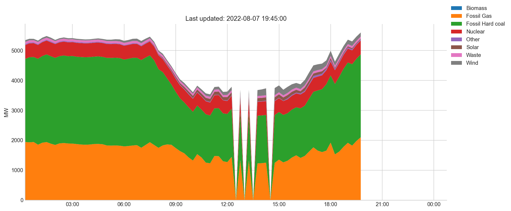
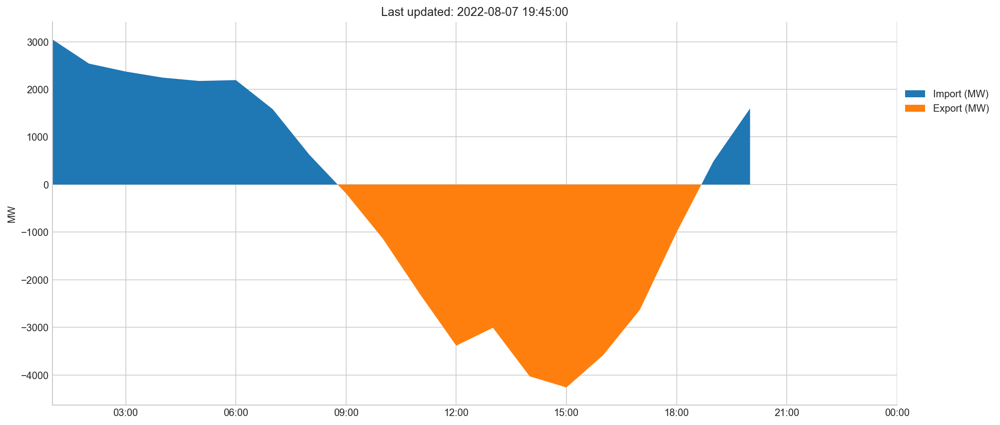
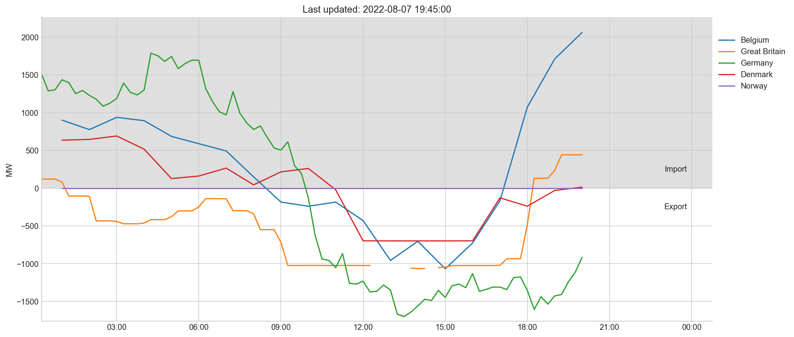

As gas prices surge in The Netherlands (and in many other Europe), I wanted to gain more insight into the energy production/generation in The Netherlands. Lucky enough, ENTSOE provides near realtime energy generation data for many/most European countries. In this post, I graph some data about Dutch energy generation.
The graph below displays the aggregated net generation output (MW) over time per production type. Sadly this shows us that almost every day many of sources for energy production are’nt renewable (yet).
Thee graphs below display the actual export and import of energy by The Netherlands. In this graph negative MW are exports and positive MW are imports.

The graph below displays the export/imports in more detail, based on the areas that energy export/imports are going or coming from in MW. The negative values represent energy export and the positive values represent energy import.

The data is gathered by scraping the Transprancy platfrom of ENTSO-E (the European Network of Transmission System Operators) which is the electricity transmission system dat operates in 35 countries across continental Europe. They publish energy generation per production type (Gas, Goal, Solar, Wind, etc…).
The scraped data can be found on kaggle and is updated daily. The data is always as day behind the current date.